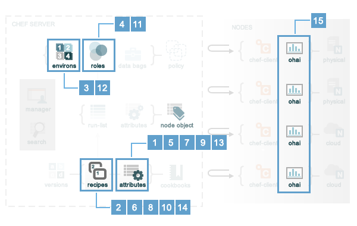

For Chef, two important aspects of nodes are groups of attributes and run-lists. An attribute is a specific piece of data about the node, such as a network interface, a file system, the number of clients a service running on a node is capable of accepting, and so on. A run-list is an ordered list of recipes and/or roles that are run in an exact order. The node object consists of the run-list and node attributes, which is a JSON file that is stored on the Chef Server. The chef-client gets a copy of the node object from the Chef Server during each Chef run and places an updated copy on the Chef Server at the end of each Chef run.
An attribute is a specific detail about a node. Attributes are used by Chef to understand:
Attributes are defined by:
During every Chef run, the chef-client builds the attribute list using:
After the node object is rebuilt, all of attributes are compared, and then the node is updated based on attribute precedence. At the end of every Chef run, the node object that defines the current state of the node is uploaded to the Chef Server so that it can be indexed for search.
An attribute is a specific detail about a node, such as an IP address, a host name, a list of loaded kernel modules, the version(s) of available programming languages that are available, and so on. An attribute may be unique to a specific node or it can be identical across every node in the organization. Attributes are most commonly set from a cookbook, by using Knife, or are retrieved by Ohai from each node prior to every Chef run. All attributes are indexed for search on the Chef Server. Good candidates for attributes include:
In general, attribute precedence is set to enable cookbooks and roles to define attribute defaults, for normal attributes to define the values that should be specific for a node, and for override attributes to force a certain value, even when a node already has that value specified.
One approach is to set attributes at the same precedence level by setting attributes in a cookbook’s attribute files, and then also setting the same default attributes (but with different values) using a role. The attributes set in the role will be deep merged on top of the attributes from the attribute file, and the attributes set by the role will take precedence over the attributes specified in the cookbook’s attribute files.
Another (much less common) approach is to set a value only if an attribute has no value. This can be done by using the _unless variants of the attribute priority methods: default_unless, set_unless, and override_unless. These variants should be used carefully because when they are used, the attributes applied to nodes may become out of sync with the values in the cookbooks as these cookbooks are updated. This approach can create situations where two otherwise identical nodes end up having slightly different configurations. This approach can also be a challenge to debug, so it is recommended to use the _unless variants carefully (and only when they are really necessary).
Note
Attributes can be configured in cookbooks (attribute files and recipes), roles, and environments. In addition, Ohai collects attribute data about each node at the start of the Chef run. See the overview of attributes for more information about how all of these attributes fit together.
Attribute types can be any of the following:
| Attribute Type | Description |
|---|---|
| default | A default attribute is automatically reset at the start of every Chef run and has the lowest attribute precedence. A cookbook should be authored to use default attributes as often as possible. |
| force_default | A force_default attribute is used to ensure that an attribute defined in a cookbook (by an attribute file or by a recipe) takes precedence over a default attribute set by a role or an environment. |
| normal | A normal attribute is a setting that persists on the target system and is never reset during a Chef run. A normal attribute has a higher attribute precedence than a default attribute. |
| override | An override attribute is automatically reset at the start of every Chef run and has a higher attribute precedence than default, force_default, and normal attributes. An override attribute is most often specified in a recipe, but can be specified in an attribute file, for a role, and/or for an environment. A cookbook should be authored so that it uses override attributes only when required. |
| force_override | A force_override attribute is used to ensure that an attribute defined in a cookbook (by an attribute file or by a recipe) takes precedence over an override attribute set by a role or an environment. |
| automatic | An automatic attribute contains data that is identified by Ohai at the beginning of every Chef run. An automatic attribute cannot be modified and always has the highest attribute precedence. |
At the beginning of a Chef run, all default, override, and automatic attributes are reset. Chef rebuilds them using data collected by Ohai at the beginning of the Chef run and by attributes that are defined in cookbooks, roles, and environments. Normal attributes are never reset. All attributes are then merged and applied to the node according to attribute precedence. At the conclusion of the Chef run, all default, override, and automatic attributes disappear, leaving only a collection of normal attributes that will persist until the next Chef run.
Attributes are always applied to Chef in the following order:
where the last attribute in the list is the one that is applied to the node.
Note
The attribute precedence order for roles and environments is reversed for default and override attributes. The precedence order for default attributes is environment, then role. The precedence order for override attributes is role, then environment. Applying environment override attributes after role override attributes allows a role to exist in multiple environments.
Attribute precedence, viewed from the same perspective as the Chef overview diagram, where the numbers in the diagram match the order of attribute precedence:
Attribute precedence, when viewed as a table: